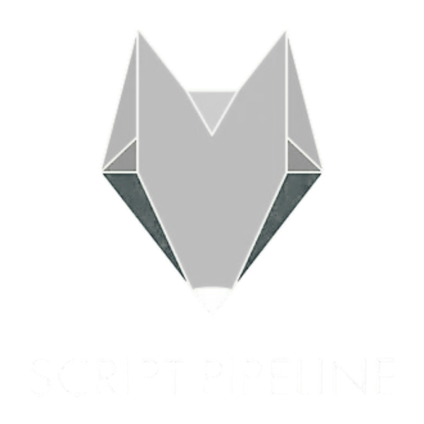

Kris Shuman — Southern screenwriter for film and television

Being raised in the South, stories weren’t told. They were lived. Avoided. Buried. But that’s not just where I’m from. That’s how people are.
Recovery didn’t give me answers. It just made it harder to ignore things. And once you start seeing the truth — you can’t unsee it.
That’s what I write about: people at the breaking point, and the moment where who they’ve been pretending to be stops working.
I don’t build characters. I follow them. And eventually, the truth shows up.
I didn’t come to storytelling to escape anything. I came to face it. And I chose to write about it.
Recognized By


An existential grittiness… that could satisfy the same audience drawn to Nic Pizzolatto’s work.
— The Black List
Represented by Amanda Robles · Middle Rock Management